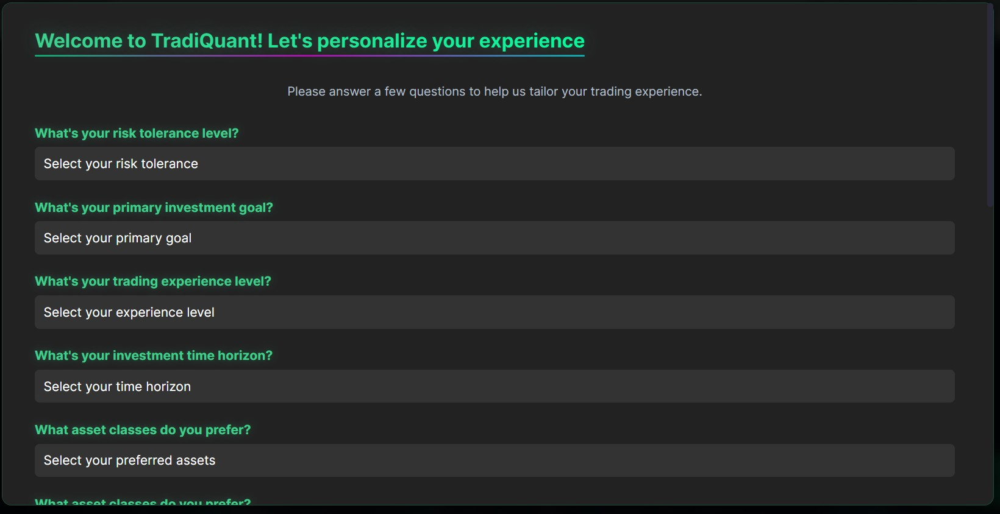
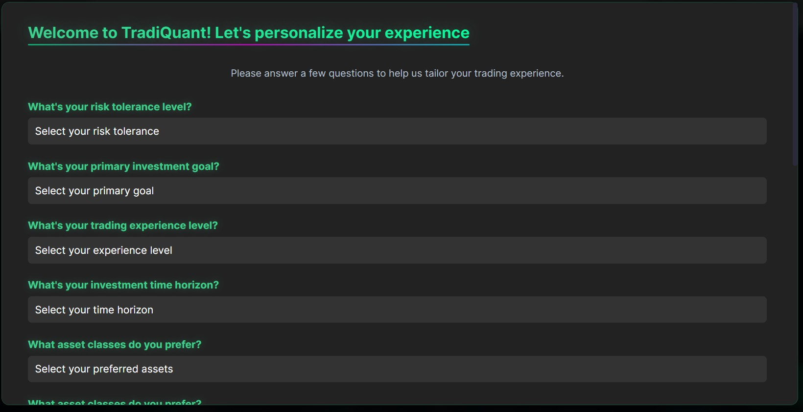
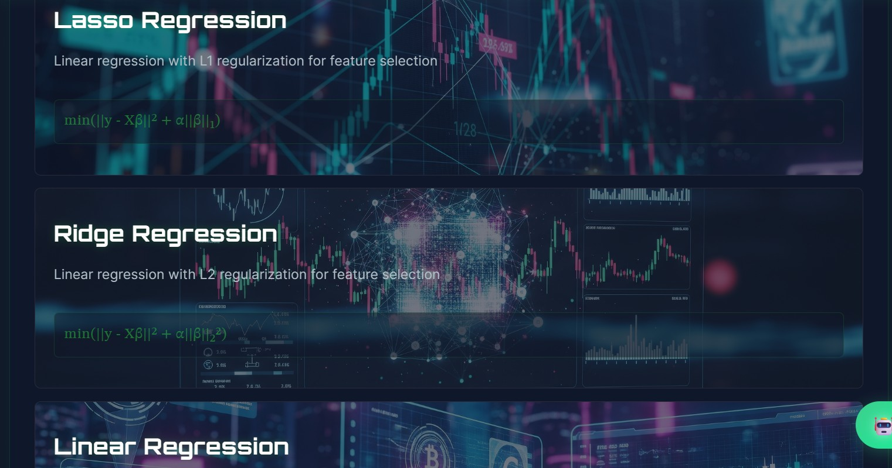
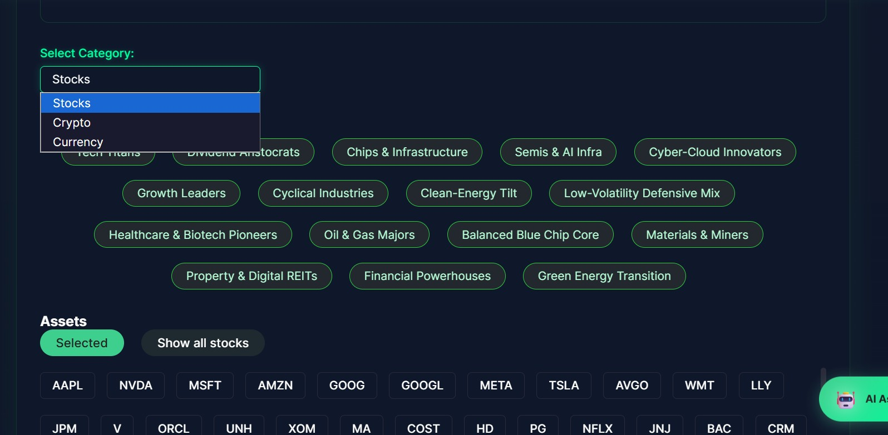
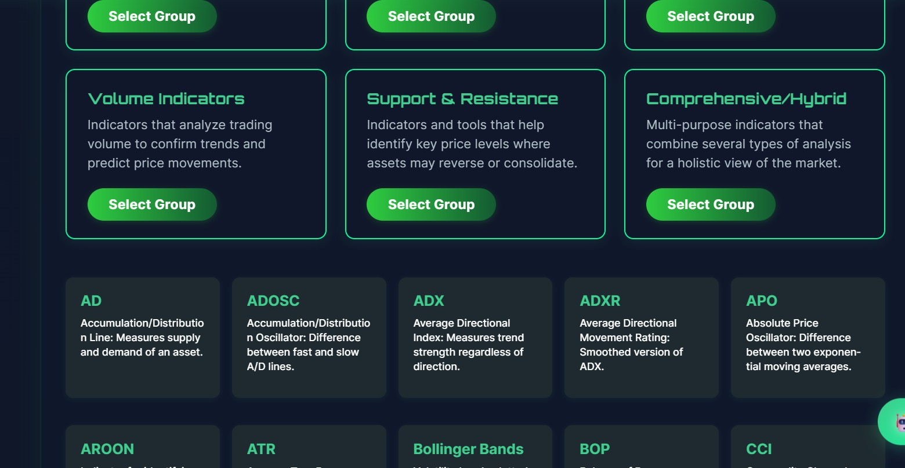
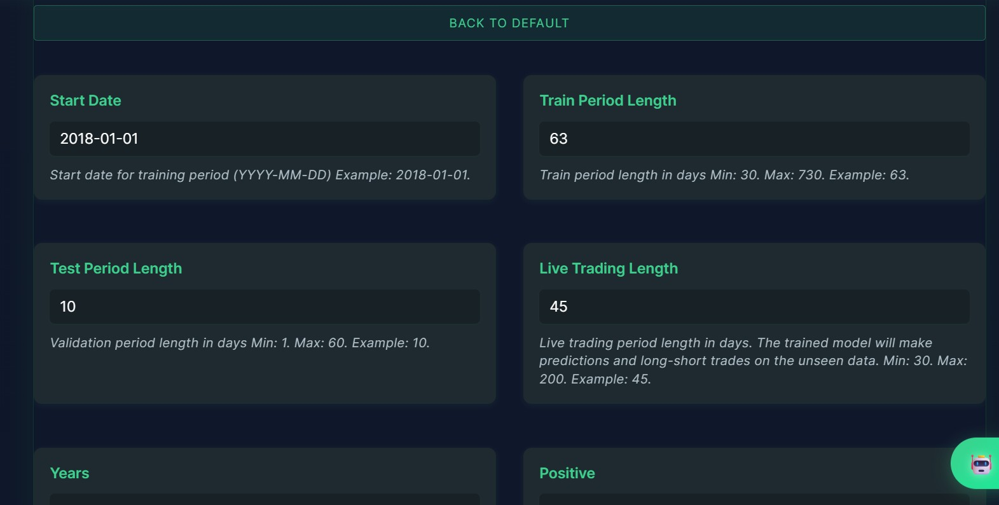
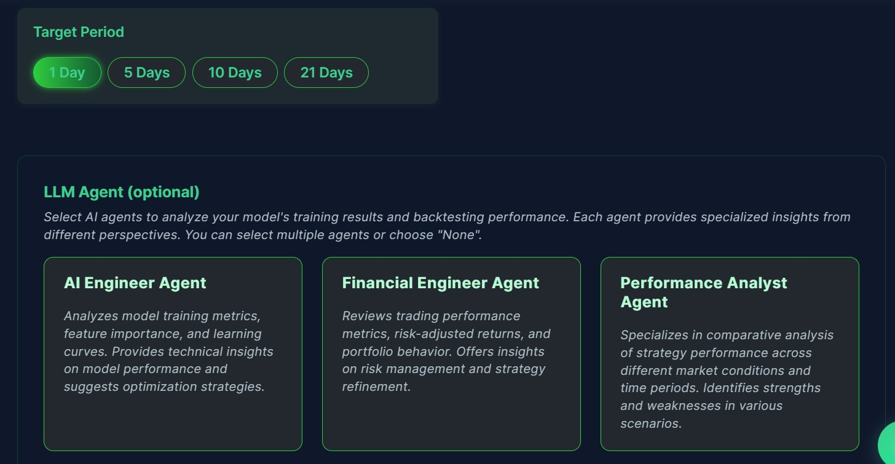
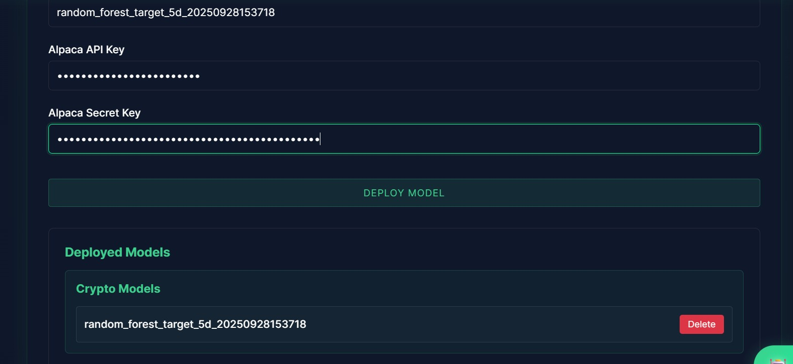

Personalized onboarding
Answer a few guided questions (goals, experience, risk). Our AI tailors model & training advice to your profile — so the platform recommends what actually fits you.
Train, backtest, and deploy AI trading strategies with ease. This application empowers you to build, analyze, and optimize your trading ideas—no coding required.
This platform ensures that every AI model you train is one-of-a-kind, thanks to a very low level of models' customization and a vast feature set. Deploy seamlessly to brokers like Alpaca, and enjoy fully automated, reproducible pipelines. Your strategies are never generic—they're as unique as your ideas.
From personalized onboarding to live deployment — a fully managed pipeline that removes engineering friction so you can focus on ideas and risk management.
Answer a few guided questions (goals, experience, risk). Our AI tailors model & training advice to your profile — so the platform recommends what actually fits you.
Pick from curated models (XGBoost, LSTM, Transformer, ensemble). Each has recommended presets and a clear expectation of behavior and latency.
Choose assets (stocks/crypto) or select one of our prebuilt portfolios. Want custom? Build one — the platform will suggest diversification fixes automatically.
Use 50+ ready features (momentum, volume signals, macro bars) or define your own. Each feature includes a short explanation and recommended lags.
Manually adjust or ask the AI Assistant to propose a hyperparameter set tuned to your assets and profile — saving you hours of trial-and-error.
Configure position sizing, number of concurrent trades, capital, slippage, and risk tolerance. Pick AI Agents to analyze backtests and suggest improvements.
Interactive dashboards + an AI-written executive summary. Export a professional PDF report with full metrics and trade logs for due-diligence or compliance.
Pick the trained model, enter your Alpaca API key & secret, choose paper or live, and Deploy. The platform handles execution, limits, and monitoring.
Scroll down to explore a preview from the full report generated by the platform. Click any image to view it in detail.

This section describes decisions I made while building TradiQuant’s probabilistic modeling pipeline for trading: how I train Bayesian Neural Networks with Pyro + SVI, how I validate them with Simulation-Based Calibration (SBC), and why I inspect marginal posteriors before live deployment.
I train Bayesian models with Pyro SVI. Concretely, I maximize the ELBO — this is the objective used by SVI and is central to how I trade uncertainty-aware signals.
Practically: I use Adam + learning-rate schedule, monitor ELBO and held-out predictive metrics (sharpe/IC for trading signals) during training. ELBO alone doesn't guarantee good trading performance, so I always pair it with downstream backtest evaluations.
Variational approximations can be biased (often underdispersed). I apply Simulation-Based Calibration (SBC) as a diagnostic before trusting a model for live trading.
I repeat this for S simulated datasets. For models I ship to backtests, the SBC histogram must be approximately uniform — otherwise I rework the guide (richer family or flows) or move to MCMC for verification.
Before running expensive experiments on time series, I validate the pipeline on conjugate models where the posterior is known.
I compare SVI's posterior mean/variance to these formulas as an automated test in CI — it quickly flags bugs in the model or guide implementation.
Trading models often have hierarchical and funnel structures. I look at marginals to understand scale and identify problematic geometry.
If the marginal for a volatility scale is extremely skewed or multimodal, I prefer to revise priors or test heavier-tailed alternatives to avoid fragile live behavior.
Key practical choices I use in TradiQuant to get stable predictive distributions for returns:
These choices keep predictive scales realistic and prevent extreme simulated returns that would break backtests.
After I define the generative model and priors I run forward simulations and compare distributional support with real standardized returns. This prevents models that produce unrealistic tail mass from reaching deployment.
If simulated returns have a larger spread than historical data (or the support is shifted), I adjust priors or feature preprocessing until the predictive simulations align with reality.
Models that pass these checks are further validated by backtests in TradiQuant; only then I allow deployment to Alpaca (paper mode first). This staged workflow — analytic checks, SBC, simulated vs real comparisons, and backtests — reduces the risk of shipping models that look good on ELBO alone but fail in execution.